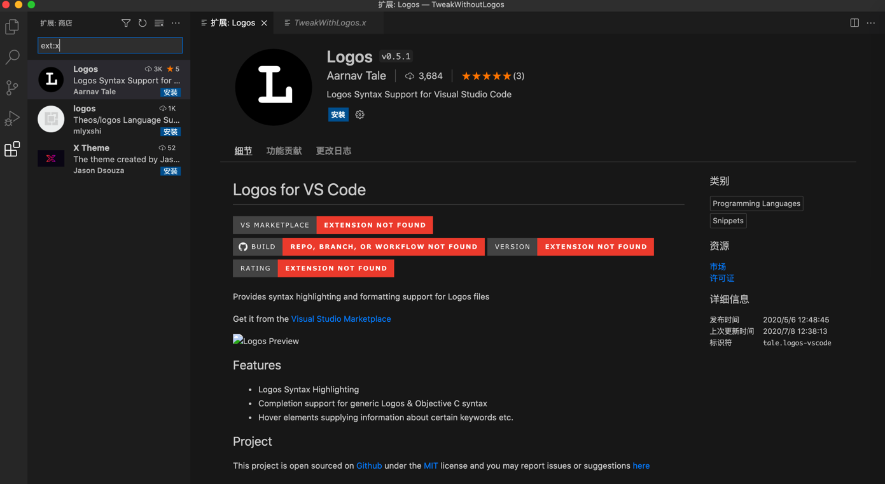

Theos/Logos
TODO：
- 【整理】iOS越狱插件开发工具：theos
- 【已解决】Mac中theos的tweak的编译并安装到iPhone
- 【已解决】Mac中theos的make install报错：ssh connect to host port 22 Connection refused
- 【已解决】Mac中初始化和安装Theos开发环境
- 【未解决】越狱iOS如何用Theos开发带GUI图形界面的插件
- 【已解决】Mac中用theos开发最简单的插件的demo：加锁屏左上角加红色框
- 【已解决】theos中确认%log的syslog系统日志是否生效
- 【无法解决】iPhone6中iOS的tweak插件hook更新系统参数不生效
- 【整理】iOS中的Frameworks框架
- 【已解决】Mac中theos用模板创建项目代码并更改代码
- 【已解决】iOS的tweak的Logos代码报错：%orig requires arguments when hooking variadic functions
- 【已解决】iOS越狱插件开发中%hookf和MSHookFunction的关系
- 【未解决】越狱iOS如何用Theos开发带GUI图形界面的插件
- 【记录】学习Theos的文档内容：theos-ref仓库
- 【已解决】Mac中theos用模板创建项目代码并更改代码
- 【已解决】Mac中theos的tweak的编译并安装到iPhone
- 【无法解决】iPhone6中iOS的tweak插件hook更新系统参数不生效
- 【已解决】Mac中用theos开发最简单的插件的demo：加锁屏左上角加红色框
- 【已解决】用XCode开发一个Objective-C的iOS的带GUI的app供配合测试theos修改系统参数是否生效
【已解决】用Objective-C的iOS的app作为theos开发的tweak插件去hook修改iPhone6的系统参数
-
- 好好学习该贴，有很多有价值的内容值得学习
- 比如：logify.pl的用法
- 好好学习该贴，有很多有价值的内容值得学习
Theos概述
Logos
- Logos
- 是什么：Theos开发套件的一个组件，通过一系列预处理指令，实现了写hook方法更简单和简洁
- Logos is a component of the Theos development suite that allows method hooking code to be written easily and clearly, using a set of special preprocessor directives
- 概述
- The syntax provided by Logos greatly simplifies the development of MobileSubstrate extensions ("tweaks") which can hook other methods throughout the OS
- In this context, "method hooking" refers to a technique used to replace or modify methods of classes found in other applications on the OS
- The syntax provided by Logos greatly simplifies the development of MobileSubstrate extensions ("tweaks") which can hook other methods throughout the OS
- Logos的指令directives
- Block level
%group%hook%new%subclass%property%end
- Top level
%config- Configuration Flags
%hookf%ctor%dtor
- Function level
%init%class%c%orig%log
- Block level
- 是什么：Theos开发套件的一个组件，通过一系列预处理指令，实现了写hook方法更简单和简洁
Theos
- Theos
- 概述：一个跨平台（交叉编译）开发工具套装，用于不用XCode的情况下，开发iOS程序
- a cross-platform suite of development tools for managing, developing, and deploying iOS software without the use of Xcode
- 用途：
- 主要用于越狱后的iOS的扩展插件的开发
- It is an important tool for people building extensions (tweaks) for jailbroken iOS; many extension developers use Theos.
- Theos is a little tool which helps you with all the application creation and compilation.
- 主要用于越狱后的iOS的扩展插件的开发
- 包含组件
- project templating system：NIC
- creates ready-to-build empty projects for varying purposes
- robust build system driven by GNU Make
- capable of directly creating .deb packages for distribution in Cydia
- Logos, a built-in preprocessor-based library of directives = an Objective-C preprocessor
- designed to make MobileSubstrate extension development easy
- project templating system：NIC
- 其他说明
- Theos is primarily used for jailbreak-centric iOS development (such as MobileSubstrate extensions, PreferenceLoader bundles, and applications intended for distribution in Cydia), but can be used for other types of projects as well.
- This can be helpful for someone wishing to develop an iPhone SDK-based application without using Mac OS X or Xcode to do so, as Theos can be used on Linux and iOS as well
- 资料
- GitHub
- theos/theos: A cross-platform suite of tools for building and deploying software for iOS and other platforms. (github.com)
- Wiki
- iphonedev.wiki
- GitHub
- 概述：一个跨平台（交叉编译）开发工具套装，用于不用XCode的情况下，开发iOS程序
- Logify
- 是什么：Theos的一个模块
- 功能：
- 输入：
.h头文件 - 输出：
.xm文件.xm= MobileSubstrate扩展- 输出log日志：当被调用时
- 输入：
- 目的：帮助hook开发者调试和查看哪些函数被调用了
- 用法举例
- logify.pl SomeClassHeader.h > tweak.xm
- NIC=New Instance Creator
- 叫法：
- 你也可以称其为：Nicolas
- 是什么：It provides a way to create projects (“instances”) based on templates.
- Theos comes with a handful of useful templates and others are available from various developers in the community.
- 文档
- 叫法：
其他相关
Logos的语法高亮
VSCode支持Logos语法高亮：
打开logos的.x文件，去搜Logos，可以找到插件：
Logos Syntax Support for Visual Studio Code

安装后，即可支持Logos的语法高亮：